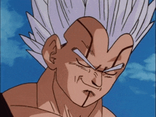

PERSONAJES DRAGON BALL GT:
Goku (niño)

Tras el deseo de un mal uso de las Esferas del Dragón, Goku es transformado nuevamente en niño. A lo largo de Dragon Ball GT, Goku busca restaurar su forma adulta y proteger la paz. A pesar de ser pequeño, mantiene su fuerza y destreza en combate, enfrentando nuevos enemigos y desafíos.
Vegeta

Aunque Vegeta no tiene un rol tan destacado en GT como en otras sagas, sigue siendo una pieza importante, siendo el rival y aliado de Goku, y defendiendo la Tierra de amenazas.
Pan
Nieta de Goku y hija de Gohan y Videl. Pan es un personaje clave en GT, ya que forma parte del equipo que viaja por el universo. Aunque joven, demuestra tener habilidades de combate excepcionales y es muy valiente.
Trunks

Trunks juega un papel de apoyo importante en GT, como el hijo de Vegeta y Bulma. Si bien no tiene tanta prominencia como en otras series, sigue siendo esencial en las batallas y misiones.
Baby

Baby es el principal villano de Dragon Ball GT. Es un parásito saiyajin que se infiltra en la Tierra, buscando venganza contra los saiyajins por la destrucción de su planeta natal. Baby tiene la capacidad de poseer cuerpos y controlar a los personajes, comenzando por Vegeta.
N*EPISODIOS DE DRAGON BALL GT:

Dragon Ball Super tiene un total de 131 episodios. La serie comenzó a emitirse en Japón en 2015 y concluyó en 2018. A lo largo de esos episodios, se cubren varias sagas clave, como la Saga de la Batalla de los Dioses, la Saga de la Resurrección de F, el Torneo de la Fuerza y la Saga de Goku Black (Futuro Trunks). Es importante notar que Dragon Ball Super continúa expandiéndose en la franquicia con películas como Dragon Ball Super: Broly (2018) y la serie Dragon Ball Super: Super Hero, que continúa la historia con nuevos episodios y contenido adicional.
CREADOR DE DRAGON BALL GT:
Toriyama no fue el creador directo de Dragon Ball GT, estuvo involucrado en su producción, proporcionando ideas generales sobre los personajes y su diseño. De hecho, Akira Toriyama es acreditado como el creador de los personajes de la serie, pero no como el autor principal de la historia. La serie fue dirigida por Osamu Kasai y producida por Toei Animation, con un guion supervisado por los escritores de la empresa. En cuanto al diseño de personajes y otros aspectos visuales, Toriyama aportó de manera limitada, y la serie fue supervisada principalmente por el equipo de animación de Toei. En resumen, la creación de Dragon Ball GT fue un trabajo conjunto entre Toei Animation y Akira Toriyama, pero Toriyama no fue el autor de la trama central, como lo fue en las series anteriores.
INTRO: OPENING DRAGON BALL S
CRADOR DEL OPENING:
La intro de Dragon Ball GT fue creada por Tetsuya Komuro, un reconocido compositor japonés. La canción se titula "Dan Dan Kokoro Hikareteku" (だんだん心ひかれてく), que significa algo como "Poco a poco, mi corazón se enamora". Tetsuya Komuro es el responsable de la composición, mientras que el cantante Hironobu Kageyama, conocido por ser el intérprete de varios otros openings de la franquicia Dragon Ball, fue quien cantó la versión en japonés. Esta canción se volvió muy popular entre los fanáticos, siendo una de las intros más emblemáticas de la saga de Dragon Ball GT, con su estilo energético y su melodía pegadiza, que capturó la esencia de la serie.
SAGAS Y VILLANOS DE GT:
1.Saga de los Dragones Oscuros:

Después de la aventura en el espacio, Goku y su equipo regresan a la Tierra solo para enfrentarse a un grave problema: las Esferas del Dragón, que fueron mal utilizadas en el pasado, han creado dragones oscuros. Cada esfera albergaba un dragón maligno, y el equipo debe enfrentarlos uno por uno. Esta saga pone énfasis en las consecuencias de usar las Esferas del Dragón de manera irresponsable.
2.Saga de Baby:
El enemigo principal de esta saga es Baby, una entidad que busca vengarse de los saiyajins. Después de poseer a Vegeta, Baby se convierte en una amenaza para todo el universo. Esta saga incluye importantes batallas, incluyendo el enfrentamiento entre Goku (transformado en niño) y Baby Vegeta. Al final, Goku derrota a Baby y la paz regresa, aunque con sacrificios.
3.Saga de Super 17:
Esta saga se centra en un nuevo villano, Super 17, una fusión de los androides 17 de Dragon Ball Z y un nuevo modelo del mismo nombre. Super 17 es muy poderoso y se convierte en una gran amenaza para Goku y sus amigos. Esta saga culmina con una feroz batalla y el regreso de los androides, aunque con la intervención de los Dragones Oscuros al final de la historia.
4.Saga de los Dragones del Corazón:
Esta saga es la última de Dragon Ball GT y tiene como tema central la aparición de nuevos dragones del corazón. En esta saga, el equipo enfrenta sus últimos desafíos y el destino de la Tierra y el universo en juego. Es una saga de cierre para la serie, con un combate final épico contra los dragones y Goku en su versión más poderosa.